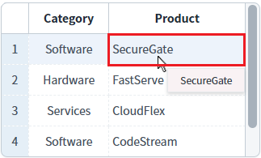
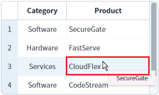
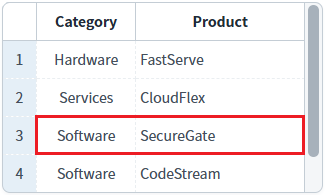
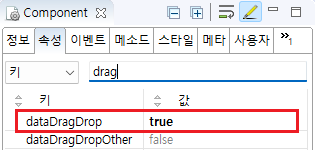

GridView의 'dataDragDrop' 속성를 사용하여, 행의 데이터를 마우스로 드래그-앤-드롭하여 이동할 수 있도록 설정된 예제입니다. 이 기능은 GridView 내부 또는 GridView와 GridView 간의 DragDrop만 지원됩니다.
'DragDrop'을 통한 행 이동 기능 설정
'DragDrop'을 통한 행 이동 기능 미설정 (기본)
1
STEP 1: 영역 'DragDrop'을 통한 행 이동 설정'의 GridView의 행을 마우스로 드래그합니다.
첫 번째 행의 Product 'SecureGate'을 마우스로 드래그합니다.
Image 1.브라우저(Chrome) 실행 예시

2
STEP 2: 행을 이동 시킬 위치에 드롭합니다.
세 번째 행 위에서 드롭합니다.(Product: 'CloudFlex')
Image 2.브라우저(Chrome) 실행 예시

3
STEP 3: 실행 결과를 확인합니다.
첫 번째 행(Product 'SecureGate')이 세 번째 행(Product 'CloudFlex') 아래로 이동됩니다.
Image 3.브라우저(Chrome) 실행 예시

GridView의 속성을 정의합니다.
[필수] dataDragDrop="true"
[default:false, true] 동일 gridView 또는 서로 다른 gridView 간의 데이터 드래그 앤 드롭을 허용.
Image 4.웹스퀘어 스튜디오의 Component View - 속성 설정 예시

Example 1.Source
<!-- gridView 의 소스 본문 예시 --> <w2:gridView dataDragDrop="true" dataList="data:dlt_exam_2"> <!-- 중략 --> </w2:gridView>
dataDragDrop